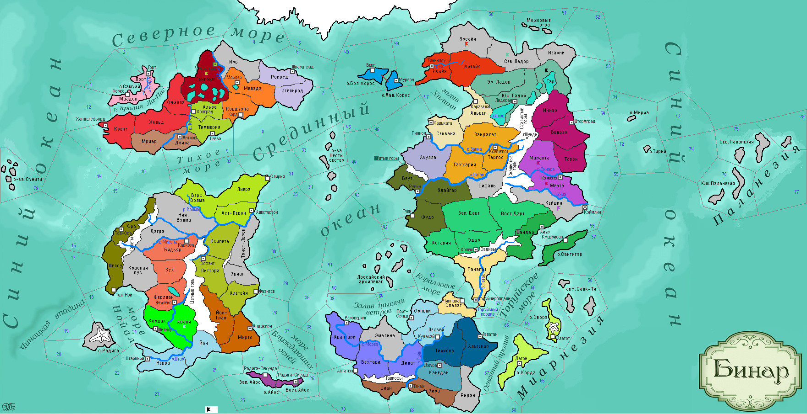

<==
| 2 |
| 3 |
| 4 |
| 5 |
| 6 |
| 7 |
| 8 |
| 9 |
| 10 |
| 11 |
==>

11-й ход истории мира Бинар (1150 г.)
· Схаза I становится первой женщиной-правительницей Рубинара.
· Бьянфанг и Кспе Ха Хоц заключают военный союз с Дюрандалем, формируя Лигу Мортис.
· Войска Астерлии освобождают земли Верх.Вэлмы.
· Князь Рерцер II вводит в Форзерде культ Мортис.
· Ферлустанская армия наносит поражение армии Штартизи на берегу реки Штар и освобождает провинцию Кордак.
· Валиган I принимает власть в Моэдасе.
· Князь Дарта Квентил I подавляет восстание в Одаре, за что получает прозвище «Великий».
· Правитель Муад’оги Стелго-ярв умирает, оставив сиротами двух своих дочерей…
· Бэрны стали первой нацией, полностью сформировавшими свой культурный код. В г.Холград открыта первая в Бинаре Лекарня.
· Языческая армия Белаэра вторгается в Синарин, объявив войну вероотступникам-каратанцам. Агрессор без боя захватывает провинции Маранта и Меата, подойдя к столице Синарала.
· Основаны новые города: Кхеррисан (Ульнар)